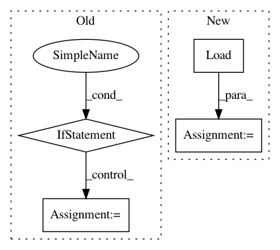

2aa825b4e1dba822624b497735c3bf0c0ffafd01,tools/nni_annotation/code_generator.py,Transformer,_visit_string,#Transformer#Any#,311
Before Change
else:
return node // not an annotation, ignore it
if string.startswith("@nni.get_next_parameter"):
deprecated_message = ""@nni.get_next_parameter" is deprecated in annotation due to inconvenience. Please remove this line in the trial code."
print_warning(deprecated_message)
if string.startswith("@nni.report_intermediate_result") \
or string.startswith("@nni.report_final_result") \
or string.startswith("@nni.get_next_parameter"):
return parse_annotation(string[1:]) // expand annotation string to code
After Change
call_node = parse_annotation(string[1:]).value
if call_node.args:
// it is used in enas mode as it needs to retrieve the next subgraph for training
call_attr = ast.Attribute(value=ast.Name(id="nni", ctx=ast.Load()), attr="reload_tensorflow_variables", ctx=ast.Load())
return ast.Expr(value=ast.Call(func=call_attr, args=call_node.args, keywords=[]))
if string.startswith("@nni.report_intermediate_result") \
or string.startswith("@nni.report_final_result") \
In pattern: SUPERPATTERN
Frequency: 3
Non-data size: 4
Instances
Project Name: Microsoft/nni
Commit Name: 2aa825b4e1dba822624b497735c3bf0c0ffafd01
Time: 2019-06-25
Author: 871886504@qq.com
File Name: tools/nni_annotation/code_generator.py
Class Name: Transformer
Method Name: _visit_string
Project Name: GoogleCloudPlatform/PerfKitBenchmarker
Commit Name: 8deb16da1aeb4c100a03948b7b444af276634fad
Time: 2017-08-30
Author: ehankland@google.com
File Name: perfkitbenchmarker/linux_packages/ycsb.py
Class Name: YCSBExecutor
Method Name: LoadAndRun
Project Name: tensorflow/tensorboard
Commit Name: 394ac5324cba203735b12542db64eb6bea5157d3
Time: 2018-09-04
Author: nfelt@users.noreply.github.com
File Name: tensorboard/backend/event_processing/event_file_loader.py
Class Name: EventFileLoader
Method Name: Load